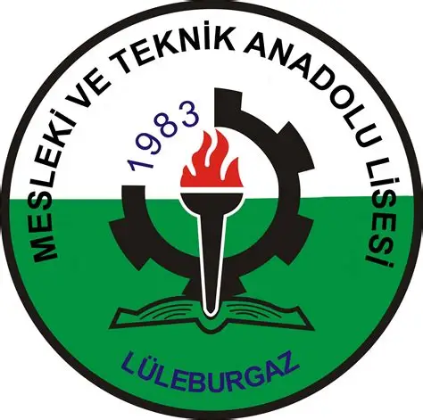
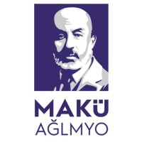

Hakkımda
12 Mart 2008'de doğdum. Lüleburgaz Mesleki ve Teknik Anadolu Lisesi'nde Ağ Sistemleri okudum ve bilgisayarların birbirine nasıl bağlandığını orada öğrendim.
Şimdi Burdur Mehmet Akif Ersoy Üniversitesi Ağlasun Meslek Yüksekokulu'nda Bilgisayar Programcılığı okuyorum. Ağın üzerinde çalışan yazılımları yazmayı öğreniyorum.
Eğitim
-
1

Lüleburgaz Mesleki ve Teknik Anadolu Lisesi
Ağ Sistemleri
-
2

Burdur Mehmet Akif Ersoy Üniversitesi, Ağlasun Meslek Yüksekokulu
Bilgisayar Programcılığı
Bildiğim diller
- HTML
- CSS
- C++
- Python
- C#
İşaretli olanlarla yazıldı: bu sayfada yalnızca HTML ve CSS kullanıldı.